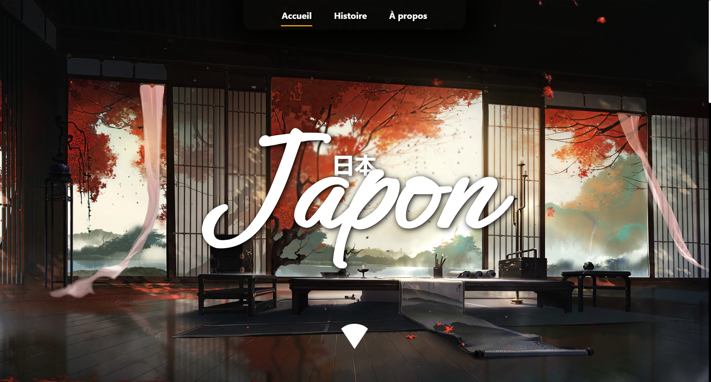

Projets

Japan Website
Site culturel sur le Japon — traditions, gastronomie et lieux emblématiques.
Aller voir


Museum de Bordeaux
Site pour le Muséum de Bordeaux, axé sur contenu culturel et expérience utilisateur.
Aller voir